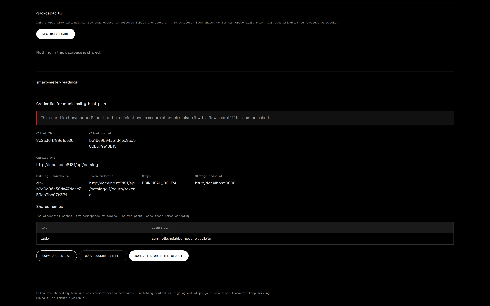

An open lakehouse you actually own.
Hi all,
I started this project because knowledge about Apache Iceberg is not spreading as easily as it should. In short, you need quite a few components before you can start: a catalog, object storage, identity, an engine and a place to work. Vendors make that part easy, and that is usually where vendor lock-in starts.
So I built a small platform that shows the other route: every building block open source, running on one laptop with a single command. As far as I'm concerned, Iceberg is a very good choice for autonomy and portability, not only for scale.
Read morehttps://medium.com/@sanderdw/making-apache-iceberg-feel-like-a-database-service-e89c5d0bed98
https://www.linkedin.com/posts/sanderdw_at-alliander-we-want-to-take-data-sharing-ugcPost-7505007789820256256-eoeA/
- How Iceberg actually works, and why it is not a platform like Snowflake.
- What a fully open source stack gives us: autonomy, portability and no lock-in.
- A demo of teams, databases, notebooks and data sharing on one identity.
Apache Iceberg is doing for data what open APIs did for applications.
How Apache Iceberg works
And why it is not a database platform like Snowflake.
Iceberg is a specification, not a product you buy
- One vendor delivers storage, compute, catalog, security and the UI as a single product.
- Your tables live in the vendor's format and in the vendor's account.
- You rent the capability, so leaving means migrating the data and everything built around it.
- An open specification for how table data and metadata are laid out in object storage.
- Data files are plain Parquet and metadata is JSON and Avro, so no server owns them.
- You bring the catalog, the engines, the storage and the identity provider, and each one stays replaceable.
The point of the comparison is ownership: which parts of the stack you control yourself, and which parts you rent.
The layers of one Iceberg table
The catalog itself stays small. Everything else is files in object storage, and a commit is the swap of a single pointer.
A complete Iceberg table is a handful of files in a bucket

metadata.json, straight from object storage
{
"format-version": 2,
"table-uuid": "dffd4aa0-93f0-4d1a-ae4f-52eb661d3c13",
"location": "s3://db-…/synthetic/neighborhood_electricity",
"schemas": [{ "schema-id": 0, "fields": [
{ "id": 1, "name": "timestamp_utc", "type": "timestamptz" },
{ "id": 2, "name": "home_id", "type": "string" },
…
{ "id": 13, "name": "grid_draw_kwh", "type": "double" }
]}],
"partition-specs": [{ "spec-id": 0, "fields": [] }],
"current-snapshot-id": 4747982721264509729,
"refs": { "main": { "snapshot-id": 4747982721264509729,
"type": "branch" } },
"snapshots": [{
"sequence-number": 1,
"snapshot-id": 4747982721264509729,
"summary": { "operation": "append",
"added-records": "26880",
"total-data-files": "1" },
"manifest-list": "s3://db-…/metadata/snap-4747…avro"
}]
}- Field IDs identify columns instead of names, so renaming a column never rewrites data.
- Snapshots hold the history, which means time travel is reading an older pointer.
- Refs give a table branches and tags, comparable to git.
- Partition specs can evolve while older files keep their original layout.
- None of this is vendor specific.
Same file, viewed in the storage console

What the format gives you out of the box
- ACID commits on object storage: concurrent writers are settled by an atomic pointer swap in the catalog.
- Snapshots and time travel. Every write creates a snapshot, so you can read yesterday's table or roll back a bad load.
- Schema evolution without rewriting files: add, drop, rename and widen types.
- Hidden partitioning. Users query on
timestamp_utcwhile Iceberg prunes onday(timestamp_utc).
- Statistics in the metadata, so query planning skips files without opening them.
- One copy for many engines. DuckDB, Spark, Trino, Flink and PyIceberg read the same table, and Snowflake and Databricks support Iceberg as well.
- Branches, tags and views. Refs per table support audits and write-audit-publish, and views are first class catalog objects.
- Format version 3 adds semi-structured
VARIANT, nanosecond timestamps, geometry, column defaults, row lineage and deletion vectors.
In short, you get the capabilities you expect from a data warehouse, without a warehouse owning your data.
What Iceberg is not
- It is not a query engine and does not execute SQL, so you pick DuckDB, Trino, Spark, Snowflake, or all of them.
- It is not a storage system: it sits on the S3 compatible object storage you already have.
- It is not a security layer by itself. Permissions and credential vending live in the catalog and in your identity provider.
- It is not maintenance free. Compaction, snapshot expiry and orphan cleanup are yours to schedule.
That separation is deliberate: because the building blocks are independent, you decide who owns each one.
Fully open source
Autonomy, portability, and the trade-offs that come with them.
Every building block is open source
| Capability | Component | Version | License | Swappable for |
|---|---|---|---|---|
| Table format | Apache Iceberg (PyIceberg) | spec v2 and v3 · 0.12 | Apache-2.0 | The standard itself, engines come and go. |
| Catalog and permissions | Apache Polaris | 1.7.0 | Apache-2.0 | Lakekeeper, Nessie, Gravitino, Unity Catalog OSS, AWS Glue |
| Identity (OIDC) | Keycloak | 26.7.3 | Apache-2.0 | Entra ID, Okta, any OIDC provider |
| Object storage (S3 API) | RustFS | 1.0.0 | Apache-2.0 | AWS S3, MinIO, Ceph, Cloudflare R2, on-prem |
| Catalog metadata store | PostgreSQL | 18 | PostgreSQL | Managed Postgres anywhere |
| Notebooks | marimo | 0.24.2 | Apache-2.0 | Jupyter, VS Code, any Python client |
| Query engine | DuckDB with the iceberg extension, reads and writes | 1.5.5 | MIT | Trino, Spark, Flink, Polars, ClickHouse |
| Portals and API | FastAPI, Python 3.14 | 0.141 | MIT | Built here, deliberately thin. |
What avoiding lock-in means in practice
The data is Parquet in a bucket you control. Moving means copying the bucket and pointing another catalog at it, without an export job or a negotiation about egress.
Iceberg REST is an open API, so Polaris today can be another REST catalog tomorrow. The table metadata already lives next to the data.
Whether a team runs local analysis with DuckDB, distributed queries on Trino, or Snowflake where that is justified, every engine points at the same dataset without duplication.
Vendor lock-in rarely happens overnight; it creeps in through the default choices. Open formats keep the platform flexible and save us a costly migration later.
Autonomy and portability
- It runs on a laptop, a VM, Kubernetes or a cloud account, from the same Compose definition.
- A one command installer for Linux, macOS and Windows, without a vendor account or a trial clock.
- You decide where the data lives and which network it ever touches.
- The cost is compute and storage you already pay for.
- Storage: anything with an S3 API.
- Identity: any OIDC provider, with users and roles staying yours.
- Catalog: any Iceberg REST implementation.
- Compute: whichever engine fits the job, per team and per workload.
curl -fsSL https://github.com/sanderdw/iceberg-data-platform/releases/latest/download/install.sh | shPS: the honest part
- Operations are your responsibility: upgrades, backups of Postgres and the buckets, monitoring, HTTPS and secrets.
- Table maintenance is yours as well. Compaction, snapshot expiration and orphan file cleanup need a schedule.
- Security boundaries are explicit. This build is a local development platform with in-memory sessions on a trusted Docker host, so read the security model before running it anywhere else.
- Fewer vendors means tighter control over the architecture, but we have to be realistic: it also pushes more integration decisions onto a small team.
Open source does not mean free of work. The ownership you gain comes with the responsibility that goes with it.
The platform
Teams, databases, notebooks and data shares, on one identity and your own permissions throughout.
Architecture
The capability model
- A team owns databases and has a stable ID, a unique name and a description.
- A user signs in with Keycloak, belongs to one or more teams and has a role per team: read, read and write, or admin.
- A database is an Iceberg catalog in Polaris plus a dedicated S3 bucket, holding namespaces, tables and views.
- Every database has an environment: development, acceptance or production.
- A data share gives an external party read access to selected tables and views of one database, with its own credential.
- Effective access is the union of the user's teams, each at its own role. Moving a database re-syncs grants and bucket policies.
- There is no second application database: Polaris is the source of truth for teams, users and catalogs.
- Portal administration is a Keycloak role; administering a database does not grant it.
- Self-service and governance sit together: teams share data themselves, while the platform administrator sees every share.
Ownership is explicit: a team owns a database and a database owns a bucket. That is the governance model.
API first: both portals are just clients
| GET POST DELETE | /api/session | Auth state, sign in, sign out |
| GET | /api/overview | Health, teams, databases, users, data shares |
| GET POST PATCH DELETE | /api/teams[/{id}] | Teams |
| GET POST PATCH DELETE | /api/databases[/{id}] | Catalog plus bucket, per team |
| GET | /api/databases/{id}/connection | Iceberg REST connection details |
| GET POST PATCH DELETE | /api/users[/{id}] | Users and their role per team |
| DELETE | /api/shares/{id} | Revoke a data share |
| GET POST | /api/identity/{accounts,users,links} | Find, create, link Keycloak accounts |
| POST | /api/users/{id}/identity[/retry|/password] | Link, retry, reset password |
| GET | /api/admin/explorer/{databases,contents} | Browse every catalog |
| GET | /api/infrastructure · /api/health | Live service metrics, liveness |
| GET POST DELETE | /api/session | Auth state, sign in, sign out |
| GET | /api/workspace | My teams, databases, notebooks |
| PATCH | /api/team · /api/environment | Switch team or Dev, Acc, Prod |
| GET | /api/contents · /api/details | Tables, schema, snapshots |
| POST | /api/preview | Table preview, 100 rows max |
| POST DELETE | /api/notebooks[/{id}] | Start and stop a marimo container |
| GET POST PATCH DELETE | /api/shares[/{id}] | Team members list shares; team administrators manage them |
| POST | /api/shares/{id}/rotate | Replace the secret of a share |
| ANY · WS | /workspaces/{id}/… | Proxy into that container |
| GET | /api/health | Liveness |
There is no private backdoor for the UI: every button is a fetch to one of these routes, and the OpenAPI schema is generated from the same code. One level down it is open APIs again: Iceberg REST on Polaris, S3 on RustFS and OIDC on Keycloak.
One identity for everything

Databases: a catalog plus a bucket, per team

Teams and their members


A role per team

Creating a user creates a Keycloak account

Catalog explorer and live infrastructure


The user portal: your teams, your databases


Write to Iceberg: PyIceberg, DuckDB, or your own engine

Analyze with DuckDB and SQL cells

Native DuckDB on Iceberg: no dataframe in between


The same table, written and read by three engines
Python writes Parquet and commits a snapshot through the REST catalog.
Scan to Arrow and run SQL in marimo, which works well for small, interactive analysis.
The engine reads the table files directly, and swapping in Trino or Spark changes nothing about the data.
There is one copy of the data, which makes the engine a choice per workload instead of a platform-wide commitment.
Iceberg v3, written by DuckDB
CREATE TABLE lakehouse.iceberg_v3.sensor_events (
event_id BIGINT,
device_id VARCHAR,
site VARCHAR,
location GEOMETRY,
measured_at TIMESTAMP_NS,
payload VARIANT,
synthetic BOOLEAN
) WITH ('format-version' = 3);
ALTER TABLE … ADD COLUMN firmware VARCHAR DEFAULT 'v1.0';
UPDATE … SET firmware = 'v2.0' WHERE device_id = 'SENSOR-001';
DELETE FROM … WHERE payload.kind::VARCHAR = 'fault';- VARIANT holds a different structure per event, without a fixed schema.
- TIMESTAMP_NS and GEOMETRY are native column types.
- Column defaults mean that adding
firmwarerewrites none of the 480 rows. - Deletion vectors let updates and deletes mark row positions in a small Puffin file.
- Row lineage keeps a stable ID per row, together with the commit that last changed it.
A delete adds one small file instead of rewriting data

Inspect a table without opening a notebook


Snapshots, branches and a preview at any snapshot


Share a table with someone outside, without a copy
A team administrator picks tables and views of one database in the user portal and names the recipient, without a platform administrator in the loop.
Access is granted per object: one dedicated principal per share, with an explicit read grant for each selected table or view, rather than blanket permissions on the namespace or the catalog.
The recipient uses any Iceberg REST client with its own client ID and secret, and receives read-only storage credentials scoped to the shared table.
The recipient reads the same files with a credential the team can replace, expire or revoke, so there is still only one copy of the data.
Select the tables and hand over one credential


Teams manage their own shares, the platform keeps oversight


What the recipient can do, and what not
from pyiceberg.catalog import load_catalog
catalog = load_catalog(
"shared", type="rest",
uri="https://catalog.example/api/catalog",
warehouse="db-…",
credential="<client-id>:<client-secret>",
scope="PRINCIPAL_ROLE:ALL",
**{"header.X-Iceberg-Access-Delegation":
"vended-credentials"},
)
table = catalog.load_table(
"synthetic.neighborhood_electricity")
table.scan().to_arrow() # 26,880 rows
catalog.list_namespaces() # Forbidden
catalog.list_tables("synthetic") # Forbidden
catalog.load_table("synthetic.other") # Forbidden- A share holds no list privilege, so the recipient loads only the shared objects, by full name.
- Storage follows the grant: vended S3 credentials are read-only and stop at the prefix of the shared table.
- A view is a definition rather than a filter, so the tables it reads are shared with it and readable in full.
- Revoking is immediate for catalog tokens; storage credentials already handed out expire on their own.
- Outside one machine this needs your own TLS proxy in front of Polaris and RustFS.
Security model, in one slide
- Keycloak issues the token, and the user portal, Polaris and the notebooks all work with that user's token. There is no shared service account for data access.
- Polaris vends short lived, table scoped S3 credentials, so notebooks never see bucket root keys.
- Each notebook session runs in its own container and network, with a read-only root filesystem, dropped capabilities, CPU and memory limits and no Docker socket.
- Revoking a membership or deleting a user stops the affected runtimes, because authorization is re-checked every 30 seconds.
- A data share is a separate Polaris principal with one read grant per shared table or view, so it cannot list, write, or reach another database. Its secret is shown once and never stored.
The boundaries are documented: this build is meant for local development, and HTTPS, persistent sessions and hostile-tenant isolation are on the roadmap rather than part of it today.
What this means for us
Direction and ownership.
As far as I'm concerned
- Iceberg is the storage standard. Whatever engine or vendor we use, tables should land as Iceberg on object storage we own.
- Catalog and identity are the governance points. Permissions belong in the catalog and users in the identity provider, rather than in every tool separately.
- Engines are replaceable. My recommendation is to treat them as workload decisions and not as platform commitments.
- Self-service only works with clear ownership. Teams create, own and share their databases, while the platform team owns the building blocks.